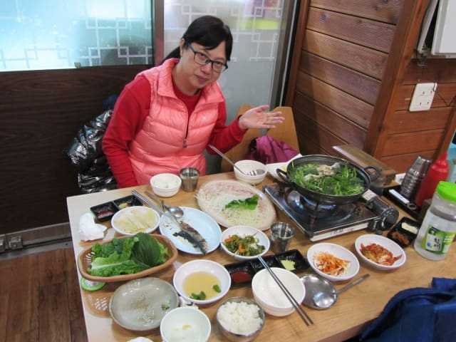

約下午六時離開正房瀑布, 沿偶來6號小路一直走, 經大街小巷, 穿過李仲燮公園、李仲燮藝術街和李仲燮路, 於晚上六時三十五分抵達西歸浦每日偶來市場。上午在參觀西歸浦每日偶來市場時, 經過一間海鮮餐館, 海鮮剌身套餐每人只是10,000韓元, 所以便打算往那裡吃晚餐。

進入西歸浦每日市場, 經過一間水果店, 看見草莓很大粒和新鮮, 便買了一盒, 只是6,000韓元。不過並不老實, 將細粒及品質較差的放在下一層。
西歸浦每日偶來市場 달인 회센타 豐富海鮮刺身晚餐
所有海鮮餐館都設在西歸浦每日市場另一邊的出入口, 而且只有幾間, 所以很容易便找到。
餐館門前的海鮮剌身套餐, 很清楚寫明是每人只是10,000韓元。
因為溝通困難, 恐怕弄錯, 進入餐館前先和服務員確定我們想叫的餐, 即是每人10,000韓元的海鮮剌身套餐。
怎料服務員連忙「耍手擰頭」, 不知是否晚上不供應那海鮮剌身套餐! 無法溝通, 過了一會, 服務員將海鮮剌身套餐的樣板及價錢拿出來, 放在門前的架上。
看一看, 也不明白, 是二人30,000韓元? 還是每人30,000韓元? 經過一輪手勢和身體語言, 最後好像是每人20,000韓元。因為不想再花時間找其他餐館, 反正同類食物的價錢應該都差不多, 便決定在這裡吃晚餐。
坐下來一會, 先送來一些前菜、刺身及兩碗鮑魚海鮮粥。
鮑魚海鮮粥超鮮味的, 回味無窮!
剌身也十分鮮甜, 差不多吃完才想起拍照。
前菜陸續的送來, 應接不暇。
燈燈燈凳~~~~ 主菜刺身也來了!
哈哈~~ 最後還送來一個海鮮湯鍋! 因為有吃飯的習慣, 縱使那麼多食物, 都要追加一碗白飯!
看! 滿桌子的美味食物! 最後吃到肚子好像皮球那般, 十分滿足! 結帳是41,000韓元, 是這旅程中最貴的一餐。

西歸浦每日偶來市場 달인 회센타 名片